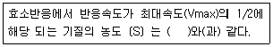

식품기사 (2005-05-29 기출문제)
1과목: 식품위생학
1. 수인성 전염병에 속하지 않는 것은?
- 장티푸스
- 이질
- 콜레라
- 파상풍
(정답률: 72%)

2. 안전한 식품 제조를 위한 작업장 관리에 대한 설명으로 적절치 않은 것은?(오류 신고가 접수된 문제입니다. 반드시 정답과 해설을 확인하시기 바랍니다.)
- 내장재는 사전에 불침수성을 조사하여 선정한다.
- 청정도가 낮은 지역을 가장 큰 양압으로 하여 청정도가 높아질수록 실압으로 낮추어 간다.
- 먼지가 누적되는 곳을 줄이기 위하여 코너에 45도 경사를 둔다.
- 작업상 필요한 조도를 충분히 갖도록 하여 감시 및 검사지역은 600lux로 한다.
(정답률: 45%)
3. 주로 감자 중의 발아부위에 함유되는 독성물질은?
- 무스카린(muscarine)
- 아마니타톡신(amanitatoxin)
- 베네루핀(venerupin)
- 솔라닌(solanine)
(정답률: 88%)
4. 돼지를 중간숙주로 하며 인체유구낭충증을 유발하는 기생충은?
- 간디스토마
- 긴촌충
- 민촌충
- 갈고리촌충
(정답률: 86%)
5. 탄산을 포함하지 않는 청량 음료수에 사용하려고 할 때 가장 적합한 보존료는?
- Sodium benzoate
- Sodium propionate
- Potassium sorbate
- Dehydroacetic acid
(정답률: 36%)
6. 단백질 식품의 변질상태를 조사하고자 한다. 다음 중 단백질 식품의 부패생성물과 거리가 먼 것은?
- 암모니아
- 알콜
- 황화수소(H2S)
- 아민류
(정답률: 82%)
7. 식품을 저온 보존할 경우 어패류의 신선도 유지기간이 짧은 이유로 올바른 것은?
- 호기성 세균이 다수 부착되어 있을 수 있기 때문
- 호냉세균이 다수 부착되어 있을 수 있기 때문
- 호염세균이 다수 부착되어 있을 수 있기 때문
- 혐기성 세균이 다수 부착되어 있을 수 있기 때문
(정답률: 80%)
8. 다음 소독 및 살균의 관계를 나타낸 것 중 틀린 것은?
- 식품공장에 있어서 기구 및 기계의 살균 - 증기살균
- 음식용 식기의 소독 - 자비소독(끓임소독)
- 우물물의 소독 - 불소의 첨가
- 우유의 살균 - 62~65℃의 온도에서 30분간 가열살균
(정답률: 44%)
9. 공장폐수에 의한 식품오염에 대한 설명으로 적합한 것은?
- 도금공장의 폐수는 주로 유기성 폐수로서 유해물질이 농·수산물 등에 직접적인 피해를 주는 경우가 있다.
- 식품공장의 폐수는 주로 무기성 폐수로서 생물학적 산소요구량(BOD)이 높고 부유물질을 다량 함유하고 있어 용수를 오염시켜 2차적인 피해를 주는 경우가 있다.
- 생물학적 산소요구량(BOD)이란 물 속에 있는 오염물질이 생물학적으로 산화되어 유기성 산화물과 가스가 되기 위해 소비되는 산소량을 ppm으로 표시한 것이다.
- 미나마타(Minamata)병은 공장폐수 중 메틸수은 화합물에 오염된 어패류를 장기간 섭취한 결과이다.
(정답률: 60%)
10. 식품 검체로부터 미생물을 신속하게 검출하는 방법에 해당하는 것은?
- PCR을 이용하는 방법
- TLC를 이용하는 방법
- HPLC를 이용하는 방법
- IR을 이용하는 방법
(정답률: 72%)
11. 사과쥬스에 신규로 기준규격이 설정된 곰팡이 독소로 오염된 맥아뿌리를 사료로 먹은 젖소가 집단식중독을 일으킨 곰팡이 독소는?
- Patulin
- Afaltoxin
- Ochratoxin
- Zearalenone
(정답률: 67%)
12. 식품에 사용되는 기구 및 용기·포장의 일반 기준에 해당하지 않는 것은?
- 식품에 사용되는 기구 및 용기·포장의 제조시에 디옥틸프탈레이트를 사용해서는 안 된다.
- 식품에 사용되는 용기·포장의 제조시 인쇄가 필요한 경우 식품과 접촉하는 면에는 인쇄하면 안 된다.
- 전류를 직접 식품에 통하게 하는 장치를 가진 기구의 전극은 백금과 알루미늄 이외의 금속을 사용해서는 안 된다.
- 식품에 사용되는 용기·포장의 재질은 별도로 식품위생법에 제시되어 있다.
(정답률: 57%)
13. 식품에 대한 저선량 방사선조사(1kGy 이하)의 목적이 아닌 것은?
- 발아억제
- 바이러스 사멸
- 기생충의 사멸
- 숙도의 지연
(정답률: 56%)
14. 육류 발색제로 쓰이는 첨가물은?
- CuSO4
- FeSO4
- KNO2
- Fe2O3
(정답률: 60%)
15. 다음의 인축공통전염병과 병원체의 연결이 잘못된 것은?
- Q 열 - Coxiella burnetii
- 파상열 - Brucella abortus
- 탄저 - Bacillus cereus
- 야토병 - Pasteurella tularensis
(정답률: 57%)
16. 식중독 세균인 장염 비브리오균의 특징에 해당되는 것은?
- 아포를 형성한다.
- 내열성이 있다.
- 감염형 식중독균으로 전형적인 급성장염을 유발한다.
- 편모가 없다.
(정답률: 64%)
17. 체내에 축적되어 만성중독을 일으킬 가능성이 가장 높은 농약류는?
- 유기인제
- 다이옥신
- 비소제
- 유기염소제
(정답률: 51%)
18. 식품첨가물에 대한 다음의 설명 중 올바른 것은?
- 식품첨가물의 안전성 검토에는 1일섭취허용량을 결정하고 독성시험은 급성, 아급성, 만성독성 시험의 3단계로 분류한다.
- 쨈류에 식품첨가물인 보존료를 첨가한 경우 다른 가열 공정을 하지 않고 안전하게 유통시킬 수 있다.
- 식품제조가공시에 사용한 원료에 보존료를 첨가하지 않은 경우 "무보존료" 라고 표시할 수 있다.
- 식품제조가공업소로 신고한 영업소는 식품 뿐만 아니라 식품첨가물도 생산할 수 있다.
(정답률: 57%)
19. 식품공장에서 소화기계 전염병체 및 기생충란 오염을 방지하기 위해 처리에 신중을 기해야 하는 것은?
- 하수
- 분뇨
- 작업장
- 배수구
(정답률: 68%)
20. 질병 발생의 역학적 인자에 해당되지 않는 것은?
- 문화적 인자
- 환경적 인자
- 숙주적 인자
- 병인적 인자
(정답률: 76%)
2과목: 식품화학
21. 감자나 고구마의 특성 및 성분에 대하여 올바르게 설명한 것은?
- 군고구마가 감자보다 더 단맛을 갖는 이유는 베타-아밀라아제의 작용 때문이다.
- 고구마와 감자는 칼륨(K)이 많이 함유되어 있는 산성 식품이다.
- 고구마가 상처를 입어 갈변이나 흑변으로 색이 변화되는 것은 이포메인(ipomain) 때문이다.
- 감자 중에 함유된 독성분의 하나인 사포닌은 콜린 에스터라아제의 활성을 억제시키는 효과를 갖고 있다.
(정답률: 53%)
22. 포도껍질의 색은 어느 성분인가?
- 안토시아닌(anthocyanin)
- 플라보노이드(flavonoid)
- 클로로필(chlorophyll)
- 탄닌(tannin)
(정답률: 82%)
23. 당의 캐러멜화(Caramelization) 과정에서 나타나는 주요한 반응과 거리가 먼 것은?
- dehydration
- enolization
- methylfurfural 생성
- polymerization
(정답률: 48%)
24. 단백질의 소화·흡수에 관한 다음 설명 중 틀린 것은?
- 인체의 위액, 장액, 췌액에는 단백질 분해효소가 존재한다.
- 위에서는 위산과 펩신에 의하여 일부 단백질이 가수분해되기는 하지만 완전히 소화되는 것은 아니며 흡수도 거의 일어나지 않는다.
- 아미노산은 주로 소장에서 흡수되는데 소장의 상부일수록 잘 흡수된다.
- 포도당이 같이 존재하면 아미노산의 흡수는 빨라진다.
(정답률: 46%)
25. 경질소맥의 특징이 아닌 것은?
- 곡립의 단면이 유리모양이다.
- 곡립의 단면이 흰색의 분상이다.
- 단백질의 함량이 비교적 높다.
- 제분하면 강력분을 얻을 수 있다.
(정답률: 20%)
26. 입자가 가장 작은 다각형인 전분은?
- 쌀전분
- 밀전분
- 고구마전분
- 감자전분
(정답률: 29%)
27. 계란의 특성과 이를 이용한 가공식품의 예를 연결한 것으로 틀린 것은?
- 가열응고성 - 삶은 계란
- 난백의 기포성 - 마요네즈
- 난황의 유화성 - 드레싱 소스(dressing sauce)
- 난황의 색 - 아이스크림(ice cream)
(정답률: 61%)
28. 요즈음 시장이나 백화점 등의 과채류 매장에서 과일이나 채소를 플라스틱 필름이나 랩(wrap)으로 포장하여 진열해 놓은 것을 볼 수 있다. 이와 관련한 설명으로 틀린 것은?
- 과일이나 채소 표면의 물리적 손상을 방지할 수 있다.
- 과일이나 채소의 수분 증산억제 및 호흡억제로 후숙을 방지할 수 있다.
- CA(controlled atmosphere) 저장의 효과를 볼 수 있다.
- 공기가 통하지 않는 병 같은 것을 이용하여 포장하면 저장의 효과는 더 커진다.
(정답률: 42%)
29. 다음 젖류 중 발효시켜서 얻은 것이 아닌 것은?
- 케파(kefir)
- 쿠미스(kumiss)
- 요구르트
- 조제분유
(정답률: 65%)
30. 식품이 저장 또는 유통 중 변화하여 생성되는 성분으로 이 성분이 많이 검출되면 변질이 되었다고 일단 의심할 수 있는 성분은?
- 아세트알데히드
- 바닐린
- 헥사날
- 프로필 알릴다이설파이드
(정답률: 41%)
31. 외부의 힘에 의하여 변형된 물체가 그 힘을 제거하여도 원상태로 되돌아가지 않는 성질은?
- 점조성
- 탄성
- 소성
- 점탄성
(정답률: 80%)
32. 쌀겨와 현미에 함유되어 있는 성분이 아닌 것은?
- r-oryzanol
- rutin
- ferulic acid
- phytic acid
(정답률: 40%)
33. 혼합야채를 주 원료로 만든 야채쥬스에 retinol 50㎍, α- carotene 120㎍, β- carotene 60㎍, lycopene 180㎍이 함유되어 있다면 이는 몇 RE(retinol equivalent) 인가?
- 50 RE
- 60 RE
- 70 RE
- 80 RE
(정답률: 32%)
34. 중심금속원소로서 마그네슘(Mg)을 가진 화합물은?
- 클로로필(chlorophyll)
- 헤모글로빈(hemoglobin)
- 미오글로빈(myoglobin)
- 헤모시아닌(hemocyanin)
(정답률: 56%)
35. 뇌조직에서 고급지방산과 에스테르 결합으로 존재하는 것은?
- 포스포이노시타이드(phosphoinositide)
- 시토스테롤(sitosterol)
- 스티그마스테롤(stigmasterol)
- 콜레스테롤(cholesterol)
(정답률: 33%)
36. 도살된 동물에서 일어나는 현상은 어느 것인가?
- pH가 올라간다.
- ATP 생성이 감소된다.
- 크레아틴 포스페이트(creatine phosphate)가 생성된다.
- 젖산 생성이 감소한다.
(정답률: 44%)
37. 비타민 C의 특성을 올바르게 설명하고 있는 것은?
- 산화형보다도 환원형 형태가 생물학적 활성이 약하다.
- 아스콜베이트 옥시다아제(ascorbate oxidase)에 의하여 비타민 C가 활성화 된다.
- 콜라겐의 생합성에 관여한다.
- 아미노카르보닐 반응을 일으키는 중요 성분이다.
(정답률: 27%)
38. 과실(고구마, 밤 등)의 통조림에서 회색의 복합염을 형성하여 산소가 남아 있는 경우 흑청색이나 청록색으로 변한다. 그 이유는?
- 탄닌성분이 제2철염과 반응하기 때문에
- 탄닌성분이 마그네슘 이온과 반응하기 때문에
- 탄닌성분이 외부의 산소와 결합하기 때문에
- 탄닌성분이 탈수되기 때문에
(정답률: 50%)
39. 다음 콜로이드 식품들의 분산상과 연속상이 서로 맞게 연결된 것은?
- 샐러드 드레싱 : 분산상 - 액체, 연속상 - 액체
- 마요네즈 : 분산상 - 기체, 연속상 - 액체
- 버터 : 분산상 - 고체, 연속상 - 액체
- 휘핑크림 : 분산상 - 액체, 연속상 - 기체
(정답률: 51%)
40. 식품의 가공 중 발생하는 변색으로 옳은 것은?
- 녹차를 발효시키면 polyphenol oxidase에 의해 theaflavin이라는 적색색소가 형성된다.
- 감자를 깎았을 때 갈변은 주로 glucose oxidase에 의한 변화이다.
- 고온에서 빵이나 비스킷의 제조시 발생하는 갈변은 주로 마이야르(maillard) 반응에 의한 것이다.
- 새우와 게를 가열하면 아스타신(astacin)이 아스타크산틴(astaxanthin)으로 변화되어 붉은 색을 나타낸다.
(정답률: 23%)
3과목: 식품가공학
41. 다음은 유지를 추출하는 방법 중 착유율을 높이기 위한 수단이다. 가장 적당한 방법은?
- 용매로 먼저 추출한 후 기계적 압착을 한다.
- 기계적 압착을 한 후 용매로 추출한다.
- 용매 추출이나 기계적 추출 어느 것을 먼저해도 수율에는 변동이 없다.
- 기계적 압착만을 하는 것이 유리하다.
(정답률: 60%)
42. 채소를 가공할 때 전처리로 데치기를 하는데 그 목적이 아닌 것은?
- 효소의 불활성화
- 오염 미생물의 살균
- 풋냄새의 제거
- 향의 보존
(정답률: 77%)
43. 코오지를 만들면 전분과 단백질을 분해하는 효소가 생성되는데 이들 효소들은?
- 아밀라아제(amylase)와 카탈라아제(catalase)
- 펙티나아제(pectinase)와 셀룰라아제(cellulase)
- 아밀라아제(amylase)와 프로테아제(protease)
- 프로테아제(protease)와 펙티나아제(pectinase)
(정답률: 72%)
44. 탈기방법 중 기계적 강제탈기가 가열탈기 보다 좋은 이유는?
- 가열처리가 어려운 식품을 취급할 수 있고 작업장의 면적이 적고 내용물의 손실이 적으며 위생적으로 취급할 수 있기 때문이다.
- 열전달이 빠르므로 탈기가 빨리되고 식품의 원형유지가 가능하므로 품질이 향상되기 때문이다.
- 작업자의 면적이 적으므로 처리능력이 향상되어 소규모 시설로서 대량생산이 가능하다.
- 밀봉직전에 관의 공간부위에 강제적으로 증기를 분사하여 공기를 몰아내고 곧 밀봉할 수 있어 극히 위생적으로 처리가 가능하기 때문이다.
(정답률: 49%)
45. 맥아로 물엿을 만들 때 당화온도가 50℃ 정도로 낮아지면 주로 어떻게 되는가?
- 고온성 젖산균이 번식하여 시어진다.
- 부패균이 번식하여 쓴맛이 난다.
- 쌀알갱이가 완전히 풀어진다.
- 당화효소의 활성이 없어진다.
(정답률: 57%)
46. 연유(練乳)는 28%의 전유고형분(全乳固形分)과 45%의 설탕을 함유하고 있다. 이 때 설탕의 농축도는 얼마인가?
- 32. 5%
- 42. 5%
- 52. 5%
- 62. 5%
(정답률: 30%)
47. 식육훈연의 목적과 거리가 먼 것은?
- 제품의 색과 향미 향상
- 건조에 의한 저장성 향상
- 연기의 방부성분에 의한 잡균오염 방지
- 식육의 pH를 조절하여 잡균오염 방지
(정답률: 68%)
48. 피단(皮蛋)제조시 주로 사용하는 방법은?
- 산 침투법
- 알칼리 침투법
- 산, 알칼리 혼합액 침투법
- 탄산가스 처리법
(정답률: 58%)
49. 개체식품에 냉각공기를 강하게 불어 넣어 냉동시키려는 물체를 떠 있는 상태로 냉동시키는 것은?
- 액체질소 냉동
- 유동층 냉동
- 침지 냉동
- 간접접촉 냉동
(정답률: 50%)
50. 습량기준으로 수분함량이 80%인 사과의 수분을 건량기준의 수분함량으로 환산하면 얼마인가?
- 567%
- 400%
- 233%
- 100%
(정답률: 61%)
51. 토마토를 파쇄하여 씨와 껍질을 제거한 펄프와 즙액을 농축한 토마토 가공품은?
- Tomato solid pack
- Tomato puree
- Tomato paste
- Tomato ketchup
(정답률: 50%)
52. 아미노산 간장 제조시 탈지 대두박을 염산으로 가수분해할 때 탈지 대두박에 남아 있는 미량의 핵산이 염산과 반응하여 생기는 염소화합물은?
- MCPD
- MSG
- NaCl
- NaOH
(정답률: 60%)
53. 원통형 저장탱크에 밀도가 0. 917g/㎝3인 식용유가 5. 5m 높이로 담겨져 있을 때, 탱크 밑바닥이 받는 압력은 얼마나 되는가? (단, 탱크의 배기구가 열려져 있고 외부압력이 1기압이다. )
- 0. 495×105 Pa
- 0. 990×105 Pa
- 1. 013×105 Pa
- 1. 508×105 Pa
(정답률: 34%)
54. 결정포도당(DE 92-93) 제조에서 전분의 산당화의 종점을 판단하는 방법은?
- 분해액에 무수 알콜을 넣어 그 경계면이 흐리지 않을 정도가 될 때
- 분해액에 40%의 알콜 첨가시 침전이 생길 때
- 분해액의 요오드 반응이 청색이 될 때
- 분해액의 요오드 반응이 적색 또는 적자색이 될 때
(정답률: 27%)
55. 전분유를 경사진 곳에서 흐르게 하여 전분을 침전시켜 제조하는 방법은?
- 테이블법
- 탱크침전법
- 원심분리법
- 정제법
(정답률: 50%)
56. 분유는 여러가지 방법으로 제조할 수 있다. 다음에 제시한 분유제조 방법 중 유가공업계에서 가장 널리 사용되는 방법은?
- 냉동건조
- Drum 건조
- Foam-mat 건조
- 분무건조
(정답률: 76%)
57. 소금절임은 육류나 채소의 저장성을 향상시키기 위하여 사용되는 저장방법 중의 하나이다. 소금절임의 저장효과의 주 원인은?
- 소금에서 해리된 나트륨 이온
- 수분 활성도의 증가
- 삼투압 저하
- 소금에서 해리된 염소이온
(정답률: 44%)
58. 미강유의 정제방법과 관계가 없는 것은?
- 탈산
- 탈납
- 탈취
- 탈수
(정답률: 68%)
59. 저장 중 젤리의 융해 작용은 젤리의 pH가 얼마 이하일 때 발생될 수 있는가?
- pH 2. 8
- pH 3. 4
- pH 3. 7
- pH 4. 0
(정답률: 27%)
60. 식육의 사후경직과 숙성에 대한 설명으로 틀린 것은?
- 사후 경직 - 도살 후 시간이 경과함에 따라 근육이 굳어지는 현상
- 식육 냉동 - 사후경직 억제
- 식육 숙성 - 육의 연화과정, 보수력 증가
- 숙성 속도 - 온도가 높으면 신속
(정답률: 61%)
4과목: 식품미생물학
61. 유당(lactose)을 발효하여 알콜을 생성하는 효모는?
- Saccharomyces 속
- Kluyveromyces 속
- Candida 속
- Pichia 속
(정답률: 42%)
62. 바이로이드(viroid)의 설명으로 틀린 것은?
- 바이로이드는 작은 구형의 한 가닥 RNA로서 알려진 감염체 중에 가장 작다.
- 외피 단백질이 없고 그 세포 외 형태는 순수한 RNA이다
- 바이로이드는 그 복제가 전적으로 숙주의 기능에 의존 한다.
- 단백질을 암호화하는 유전자를 가지고 있다.
(정답률: 45%)
63. 효모의 형태에 관한 설명으로 옳은 것은?
- 효모는 배지조성, pH, 배양방법 등과는 관계없이 항상 일정한 형태를 보인다.
- 효모 영양세포는 구형, 계란형, 타원형, 레몬형, 병모양 등이 있다.
- 일반적으로 효모의 크기는 1㎛ 이하가 정도가 보통으로 세균과 유사한 크기를 가진다.
- 효모는 곰팡이와는 달리 위균사나 균사를 형성하지 않는다.
(정답률: 43%)
64. 미생물의 영양원에 대한 설명으로 옳지 않은 것은?
- 종속영양균은 탄소원으로 주로 탄수화물을 이용하지만 그 종류는 균종에 따라 다르다.
- 유기태 질소원으로 요소, 아미노산 등은 효모, 곰팡이, 세균에 의하여 잘 이용된다.
- 무기염류는 미생물의 세포구성성분, 세포내 삼투압 조절 또는 효소활성 등에 필요하다.
- 생육인자는 미생물의 종류와 관계없이 일정하다.
(정답률: 75%)
65. Aspergillus 속과 Penicillium 속의 분생자두(分生子頭)의 차이점은?
- 분생자(分生子)
- 경자(梗子)
- 정낭
- 분생자병(分生子柄)
(정답률: 52%)
66. 아포(Spore)를 형성하는 세균은?
- Lactobacillus lactis
- Alcaligenes viscolactis
- Aerobacter aerogenes
- Bacillus megaterium
(정답률: 49%)
67. Gram 염색에서 사용하지 않는 것은?
- Lugol
- Ethyl alcohol
- Safranin
- Methyl red
(정답률: 60%)
68. Lactobacillus leichmanii(ATCC 7830)는 어떤 생육인자를 정량할 때 이용하는가?
- 비타민 B2
- 비타민 B6
- 비타민 B12
- 비오틴(biotin)
(정답률: 47%)
69. 세포내의 막계(membrane system)가 분화, 발달되어 있지 않고 소기관(organelle)이 존재하지 않는 미생물은?
- Saccharomyces 속
- Escherichia 속
- Candida 속
- Aspergillus 속
(정답률: 43%)
70. 유전자 재조합 기술에서 벡터로 사용될 수 있는 것은?
- 용원성 파아지(temperate phage)
- 용균성 파아지(virulent phage)
- 탐침(probe)
- 프라이머(primer)
(정답률: 50%)
71. 아미노산으로부터 아민(amine)을 생성하는데 관여하는 효소는?
- Amino acid decarboxylase
- Amino acid oxidase
- Aminotransferase
- Aldolase
(정답률: 58%)
72. 그램 양성 구균류의 특징을 설명한 것으로 적당한 것은?
- 대표적인 젖산균인 Lactobacillus 가 이에 속한다.
- 대장균을 비롯한 장내세균이 이에 속한다.
- 대부분의 구균은 내생포자를 만들기 때문에 내열성이 높다.
- 낮은 수분활성도에서 잘 견디는 Staphylococcus가 이에 속한다.
(정답률: 32%)
73. 소맥분 중에 존재하며 빵의 slime화, 숙면의 변패 등의 주요 원인균은?
- Bacillus licheniformis
- Aspergillus niger
- Pseudomonas aeruginosa
- Rhizopus nigricans
(정답률: 55%)
74. 높은 식염농도에서도 생육하는 내염성 효모는?
- Zygosaccharomyces rouxii
- Saccharomyces pasteurianus
- Saccharomyces carlsbergensis
- Candida utilis
(정답률: 59%)
75. 바이러스 증식 단계가 올바르게 표현된 것은?
- 부착단계 - 주입단계 - 단백외투 합성단계 - 핵산 복제단계 - 조립단계 - 방출단계
- 주입단계 - 부착단계 - 단백외투 합성단계 - 핵산 복제단계 - 조립단계 - 방출단계
- 부착단계 - 주입단계 - 핵산 복제단계 - 단백외투 합성단계 - 조립단계 - 방출단계
- 주입단계 - 부착단계 - 조립단계 - 핵산 복제단계 - 단백외투 합성단계 - 방출단계
(정답률: 57%)
76. DNA의 수복기구로서 틀린 것은?
- 광회복
- 제거수복
- 재조합수복
- 염기수복
(정답률: 50%)
77. 병원성 대장균(pathogenic E. coli)에 대한 설명으로 맞지 않는 것은?
- 병원성 대장균은 균주에 따라 독소형 식중독 또는 감염형 식중독을 유발한다.
- E. coli O157:H7 균주가 식품에서 증식하면 베로톡신(verotoxin)을 생성하여 식중독을 일으킨다.
- 장관침입성 대장균은 상피세포에 침입하여 증식하므로, 세포점막을 괴사시킨다.
- 장관독소원성 대장균의 감염증상은 장염과 설사이다.
(정답률: 37%)
78. 고등미생물의 진핵세포와 하등미생물의 원핵세포에 공통으로 존재하는 것은?
- 메소좀
- 편모
- 미토콘드리아
- 세포질
(정답률: 52%)
79. 접합균류(Zygomycotina)에 속하지 않는 곰팡이는?
- Absidia 속
- Aspergillus 속
- Rhizopus 속
- Mucor 속
(정답률: 37%)
80. 공여세포로부터 유리된 DNA가 직접 수용세포 내로 들어가 일어나는 DNA 재조합 방법은?
- 형질전환(transformation)
- 형질도입(transduction)
- 접합(conjugation)
- 세포융합(cell fusion)
(정답률: 43%)
5과목: 생화학 및 발효학
81. 해당작용 및 TCA cycle에서 형성된 NADH가 respiratory chain에 전자를 전달해 주는 첫 번째 수용체는?
- Ubiquinone
- Cytochrome c
- Cytochrome a
- FMN(flavin mononucleotide)
(정답률: 28%)
82. 알콜 10% 수용액을 가열하여 냉각하여 51%의 알콜이 생성 되었다. 이 때 증발계수는?
- 5. 1
- 6. 1
- 7. 1
- 8. 1
(정답률: 68%)
83. Pyruvate가 탈탄산되어 acetyl-CoA로 산화되는 반응에서 Pyruvate decarboxylase의 조효소로 작용하는 물질은?
- thiamine pyrophosphate
- FAD
- NAD
- pyridoxal phosphate
(정답률: 23%)
84. 우리나라에서는 5' - nucleotide를 만들 때 효소 분해법과 직접 발효법을 사용하고 있다. IMP의 직접 발효법과 관련성이 없는 것은?
- Brevibacterium ammoniagenes의 adenine 등의 요구변이주를 사용한다.
- 균체가 생육하면서 hypoxanthine을 생합성하고 다시 5'-IMP로 생합성된다.
- Bacillus subtilis 의 adenine 등 요구 변이주를 사용하여 inosine을 만들고 POCl3로 반응시켜 만든다.
- 호기조건과 adenine을 첨가한 배지에서 발효시켜야 한다.
(정답률: 26%)
85. 다음 주정공업에서 이용되는 아밀로(Amylo)법의 장점을 열거한 것 중 잘못된 것은?
- 코지(koji)를 만드는 설비와 노력이 필요없다.
- 밀폐발효이므로 발효율이 높다.
- 대량사입이 편리하여 공업화에 용이하다.
- 당화에 소요되는 시간이 짧다.
(정답률: 40%)
86. 글루코네오제네시스(Gluconeogenesis)라 함은 무엇을 의미 하는가?
- 포도당이 혐기적으로 분해하는 과정
- 포도당이 젖산이나 아미노산으로부터 합성되는 대사 과정
- 포도당이 산화되어 ATP를 합성하는 과정
- 포도당이 아미노산으로 전환되는 과정
(정답률: 56%)
87. ATP는 세포의 여러가지 일을 하기 위하여 에너지원으로 쓰인다. 다음 중 ATP를 사용하지 않는 생체현상은?
- 단백질의 합성과정
- 근육의 수축작용
- 세포내의 K+ 축적
- 미토콘드리아의 전자전달 현상
(정답률: 46%)
88. 글루탐산(glutamic acid)을 생산하는 균주의 공통적 성질이 아닌 것은?
- 혐기적으로 배양하였을 때 높은 수율로 생산한다.
- catalase 양성이며 그램양성균이다.
- 균의 형태는 대략 구형, 타원형 단간균이다.
- 포자를 형성하지 않으며 비오틴을 요구한다.
(정답률: 30%)
89. 단백질의 합성과정에서 아미노산이 활성화되어 t-RNA에 전달될 때 t-RNA의 어느 곳이 그 활성화된 아미노산의 수용체(accepter)가 되는가?
- t-RNA 사슬말단 구아노신(guanosine)의 3'-OH이다.
- t-RNA 사슬말단 아데노신(adenosine)의 3'-OH이다.
- t-RNA 사슬말단 아데노신(adenosine)의 5'-OH이다.
- t-RNA 사슬말단 구아노신(guanosine)의 5'-OH이다.
(정답률: 39%)
90. 구연산 발효의 설명으로 적합하지 않은 것은?
- 구연산 발효의 주생산균은 Aspergillus niger 이다.
- 배지 중에 Fe2+, Zn2+, Mn2+ 등 금속이온량이 많으면 산생성이 저하된다.
- 발효액 중의 구연산 회수를 위해 탄산나트륨 등으로 중화한다.
- 구연산 발효의 전구물질은 옥살산(oxaloacetic acid) 이다.
(정답률: 47%)
91. 포도주 제조 중 아황산 첨가의 목적이 아닌 것은?
- 에탄올만 생성하는 과정으로 하기 위해서
- 포도주 발효시에 유해균의 사멸 및 증식억제를 위해서
- 포도주의 산화 방지를 위해서
- 적색 색소의 안정화를 위해서
(정답률: 55%)
92. 알콜 발효에 있어서 전분증자액에 균을 배양하여 당화와 알콜 발효가 동시에 일어나게 하는 방법은?
- 액국코지법
- Amylo법
- 밀기울 코지법
- 당밀의 발효
(정답률: 66%)
93. 내열성 alkaline protease 생산에 이용되는 미생물은?
- Aspergillus 속 균주
- Bacillus 속 균주
- Pseudomonas 속 균주
- Streptomyces 속 균주
(정답률: 30%)
94. pK가 5인 -COOH 기가 있는 물질 1mole을 물 1L에 용해시킨 후 pH를 5로 조절했을 때 몇 mole이 -COO- 형태로 이온화 되는가?
- 0. 1mole
- 0. 2mole
- 0. 5mole
- 1. 0mole
(정답률: 39%)
95. 광합성에서의 ATP 생성은 광인산화(photophosphorylation)에 의해 생성된다. 광인산화에 관한 설명 중 옳은 것은?
- 미토콘드리아내막에서 일어난다.
- 광인산화는 전자전달과 짝지어져 일어난다.
- 미토콘드리아의 산화적 인산화 반응과 다른 분자 메카니즘으로 일어난다.
- ATP는 비순환적 인산화(noncyclic photophosphorylatio-n photophosphorylation)에 의해서만 생성된다.
(정답률: 30%)
96. 다음 ( )에 들어갈 적당한 것은?

- 1/Km
- -1/Km
- Km
- -Km
(정답률: 50%)
97. 지질 합성에 관한 설명으로 잘못된 것은?
- 지질의 합성은 세포질에서 일어난다.
- 지질의 합성은 acetyl-CoA로부터 시작된다.
- 다중효소복합체가 합성반응에 관여한다.
- NADH가 사용된다.
(정답률: 38%)
98. 맥주 발효에서 보리를 발아한 맥아를 사용하는 목적이 아닌 것은?
- 보리에 존재하는 여러 종류의 효소를 생성하고 활성화 시키기 위하여
- 맥아의 탄수화물, 단백질, 지방 등의 분해를 쉽게 하기 위하여
- 효모에 필요한 영양원을 제공해 주기 위하여
- 발효 중 효모 이외의 균의 성장을 저해하기 위하여
(정답률: 58%)
99. 맥주의 발효가 끝나면 후발효와 숙성을 시킨 다음 여과하여 일정기간 후숙을 시킨다. 이 때 낮은 온도에 보관하여 후숙을 하면 현탁물이 생기는 경우가 있다. 다음 설명 중 옳은 것은?
- 효모의 Invertase가 남아 있어서
- 주발효가 완전하지 못하여
- 발효되지 못한 지방산(fatty acid)이 남아 있어서
- 분해물 중 펩티드(peptide)와 호프의 수지 및 탄닌성분들이 집합체(flocculation 또는 colloid)를 형성하기 때문
(정답률: 64%)
100. 빵효모의 균체 생산 배양관리 인자가 아닌 것은?
- 온도
- pH
- 당농도
- 혐기조건
(정답률: 64%)